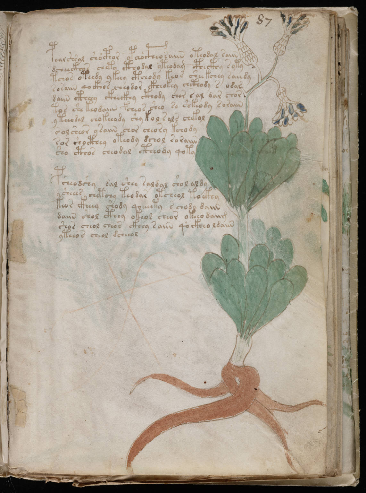

f87r
1poalshsal shocphor ypchocpheosaiin oteodal saiin2dcheeckhos chety cthodal yteodam cpheckhy syty3tchos oteedy ykeey ctheody keos shee kchey saiidy4soraiin qockhos cheodor ckheokey chcthody s odar5daiin ctheey ckheckhy cthody chor sal dar chor6tos she keodaiin fcheos sheo so shkeody soraiin7yteeodal chokeeody shy kol sals chekol8sol sheor ysaiin chor cheory kchody9sor shocthey oteody dchol soraiin10sho cthos cheodal ctheody qoty11psheodshy dal shee saldal shol aldy12ysheees chetchy teodar otcheol tockhy13keor ckheey shody qoeeeety schody daiin14daiin shol cthey okeol cheor okeeo daiim15shos cheol cheos ckhey saiin qockheol daiin16yteeos cheol dcheeol
